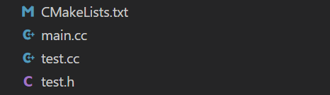

最近在项目开发中用到了cmake这个工具，cmake在构建C++大型项目方面的作用非常大，整体而言CMake是一个存在于 source code 和 executable files 之间的layer。CMake通过专有的工具CmakeLists.txt来构建build内容，并且会自动生成一份makefile，从而避免很多手动构建项目编译脚本的麻烦，最终仅需要一键make -j12即可。有利于构建一个功能完整、逻辑严谨的项目，是开发C++大型项目必须学习的内容。在此笔者对开发过程中的cmake用法进行总结与提炼。
基础：构建一个小型项目
假设现在我的C++项目文件分别有：test.h，test.cc，main.cc三份文件，在前两份文件中我定义了一些函数，在main.cc中对其进行调用，并实现完整的main函数。下面将使用cmake工具对项目进行构建，目的是生成一份可执行文件。

下面可以逐句拆解CmakeLists.txt中的内容，以对整份文件的运行原理进行解读。
- 规定CMake版本：
cmake_minimum_required(VERSION 3.12) - 指定项目名称：
project(test_project) - 设置C++标准：
set(CMAKE_CXX_STANDARD 17)
以上三步是基本的内容。
在C++编译的过程中，我们一般的习惯是在工程目录下新建一个build路径，用于存放我们的编译出的可执行文件。我们执行cmake的路径，会被CMake工具认定为 CMAKE_BINARY_DIR ，如果想要 把编译生成的可执行文件统一放在一个文件夹中，需要：
- set(CMAKE_RUNTIME_OUTPUT_DIRECTORY ${CMAKE_BINARY_DIR}/bin)
接下来是添加源代码路径：
1 | set(SOURCES |
需要注意的是，这里并没有包含test.h，这是因为头文件并不用被显式地包含。
最后是添加可执行文件：
- add_executable(test ${SOURCES})
直到现在，我们完成了对CMake的构建。接下来我们可以在build路径下进行编译：
1 | mkdir build && cd build |
有以下几个经验：
- 一般的习惯都是创建一个build文件夹，然后进入路径中再使用
cmake .. CMAKE_BINARY_DIR是一个只读路径，因为在build路径下执行cmake，cmake会自动绑定build就是CMAKE_BINARY_DIR- set指令应当在
add_executable前面，如果在后面的话，不起作用
1. 编译成库：add_library() 与 target_link_library()
1.1 基础讲解
1.1.1 example
1 | add_library(LlamaDecoderLayerWeight STATIC LlamaDecoderLayerWeight.cc) |
-
add_library：用于创建一个库目标，可以是静态库（STATIC）或共享库（SHARED）。它指定了库的名称、类型以及库的源文件列表。在给定的案例中，add_library(LlamaDecoderLayerWeight STATIC LlamaDecoderLayerWeight.cc)创建了一个名为 “LlamaDecoderLayerWeight” 的静态库目标，并将 “LlamaDecoderLayerWeight.cc” 文件添加到该目标的源文件列表中。简而言之，在这里就是将写好的文件作为一个可以被refer (#include) 的文件加入编译环境中，方便其他文件进行include并且编译。所以在概念上看，它可以被视作library的一种。 -
set_property：用于设置目标（target）的属性。目标可以是库目标、可执行目标等。-
set_property(TARGET LlamaDecoderLayerWeight PROPERTY POSITION_INDEPENDENT_CODE ON)设置了 “LlamaDecoderLayerWeight” 目标的POSITION_INDEPENDENT_CODE属性为ON，表示生成的目标代码是位置无关的，可用于生成共享库。 -
类似地，
set_property(TARGET LlamaDecoderLayerWeight PROPERTY CUDA_RESOLVE_DEVICE_SYMBOLS ON)设置了CUDA_RESOLVE_DEVICE_SYMBOLS属性为ON，表示使用 CUDA 解析设备符号。
-
-
target_link_libraries：用于指定目标需要链接的其他库。target_link_libraries(LlamaDecoderLayerWeight PUBLIC memory_utils cuda_utils logger)将 “LlamaDecoderLayerWeight” 目标与名为 “memory_utils”、“cuda_utils” 和 “logger” 的库进行链接。这样，当构建 “LlamaDecoderLayerWeight” 目标时，CMake 会自动解析这些依赖关系并链接相应的库。这里是因为即便是LlamaDecoderWeight.cc或者.h里面也有很多需要include其他头文件。如果是这样的话，那么这个library同样需要与其他library相连接才可以完成编译任务。
1.1.2 Basic Conclude
在构建项目的时候，不仅要在头文件中写好相应文件的位置，以声明refer工作，还要在CMake中考虑自身文件与其他文件的关系：
- 该文件是否会被其他文件include？ -> add_library() 就是把自己编译为一个库，便于其他库使用
- 该文件是否会include其他文件？ -> target_link_libraries() 与其他库链接，便于自己的代码中使用其他库的代码
这里需要注意的是，头文件中include了什么，target_link_libraries就需要引入什么。可能需要进行link的库就在源码中，可能是其他库；同理，源码中使用的库可能就在源码中，也可能就在其他library中。无论如何都要进行双通道的reference。
1.2 深入add_library()
关键字ALIAS
同样在cmake中看到这样的用法：
1 | add_library( |
这个ALIAS的用法就是把前面的words与后面的库名称画等号，syntax：
1 | add_library(<other_name> ALIAS <lib_name>) |
在这里，如果有其他库会用到TritonFasterTransformerBackend::triton-fastertransformer-backend，cmake解释器会自动将其链接到triton-fastertransformer-backend。
1.3 深入target_link_libraries()
1.3.1 parameter -l in target_link_libraries():
在 target_link_libraries() 中不免会遇到这种参数：-lcudart ，这其实是由两个部分组成：
- -l
- cudart
其中cudart是系统的标准库，-l是参数，表示链接这个库。所以在代码中编译而生成的库，都用其自身在add_library()时定义的库名字表示，而引用系统的、外部的库，都用-l指令表示。
1.3.2 PUBLIC, STATIC, PRIVATE
在CMake的target_link_libraries()函数中，PUBLIC，STATIC和PRIVATE是用于指定链接库时的可见性和属性。
- PUBLIC表示链接库不仅会与目标库自身进行链接，还会传递给目标库的使用者。即，如果一个目标库（target）使用了target_link_libraries()将某个库设为PUBLIC，那么与该目标库链接的其他目标库也会自动链接该库。
- PRIVATE表示链接库仅用于目标库自身的链接，不会传递给目标库的使用者。这意味着与该目标库链接的其他目标库不会自动链接该库。
- STATIC表示链接库时使用静态库（即.a或.lib文件）。这意味着库的实现会被完整地复制到生成的目标库中，使目标库独立于系统中的其他库。
syntax:
1 | target_link_libraries( |
2. CMake编译树
CMake工具有一个特点，就是每个路径会有一个单独的CMakeLists.txt保证该路径下的文件能够被编译，而在上一层目录中，会使用add_subdirectory()进行指明子路径的编译项目。
例如，子路径下的CMake：
1 | cmake_minimum_required(VERSION 3.8) |
上层路径下的CMake：
1 | add_subdirectory(llama) |
在根路径下的CMake是如何识别所有的库文件的？我们可以分析如下脚本：
1 | add_library(transformer-shared SHARED |
在这个代码片段中，transformer-shared 是要创建的共享库的名称。SHARED 表示这个库是一个共享库，即在运行时可以被动态加载和链接。
接下来的行 $<TARGET_OBJECTS:BaseBeamSearchLayer>等内容，是 CMake 的生成器表达式（generator expression）。它们用于引用其他目标（target）生成的对象文件（object files）。
在理解add_subdirectory()操作的时候，可以理解为C++的include行为，也就是把子路径下的library全部都放在了父路径下，所以通过$<TARGET_OBJECTS:xxx>可以直接检索到。
3. 编译params：option 与 add_definition
1 | option(BUILD_PYT "Build in PyTorch TorchScript class mode" OFF) |
这种Option，是CMake中的属性之一。
这句话的语法是：option(参数名 "备注" default)，最后的值是该参数的 default，实际的值可以在编译时指定：
1 | cmake -DSM=86 -DCMAKE_BUILD_TYPE=Release -DBUILD_PYT=ON -DBUILD_MULTI_GPU=ON -D SPARSITY_SUPPORT=ON -D PYTHON_PATH=/usr/bin/python3 .. |
这里的所有 -D参数，都是在其中通过option()指定好的参数内容。
在很多代码中，我们经常会遇见 宏定义，这些宏其实并不仅仅能够在代码中规定好，在编译的时候也可以临时传入，例如：
1 | add_definitions(-DSPARSITY_ENABLED=1) |
这个内容就是在SPARSITY_SUPPORT=ON的情况下执行的脚本句，它会引起代码中对某些代码块的编译：
1 |
|
在此处，宏SPARSITY_ENABLED就是在cmake里面指定好的一个definition，这个在编译中会被编译器识别，进而编译这其中的代码块。
set()与option()的区别
一般而言，set()创建的变量是仅在cmake中读写的，外部不能访问；而option()提供了一个外部用户可访问的开关选项，可以在编译的时候由用户指定。
4. CMake 工程实践
工程目录如下：
1 | cmake_base_test |
在这里，三层CMake的内容分别是：
1 | add_library(header_test PUBLIC header_test.cc) |
1 | add_subdirectory(func_1) |
1 | cmake_minimum_required(VERSION 3.15) |
我们从报错信息入手进行更改：
4.1 PUBLIC并不是用在add_library()中的
1 | CMake Error at src/func_1/CMakeLists.txt:1 (add_library): |
PUBLIC 是用在target_link_libraries函数中，用于定义库的依赖关系和编译选项的传递规则，并不是用在add_library中的。
4.2 "src/header_test/header_test.h"找不到
这个问题非常重要，因为实际工程中我们希望通过src约束整个项目的source code，而不是通过相对路径来寻找。因此管理好路径成了十分重要的工作。
在你的CMakeLists.txt文件中，你需要将项目的根目录添加到你的include路径中。
1 | target_include_directories(main PUBLIC ${CMAKE_SOURCE_DIR}) |
有关路径的问题，要灵活变通。这也是一个很重要的经验，让你在以后的开发过程中，把主要精力都放在代码内容上，而不是工程构造编译上。只要保证路径没问题就行，何必揪得这么死呢，非要从src/开始不可？
有关这个问题，在后面其实还有没有解决的。最后我把src/前缀去掉了，结果成功了。我发现老是纠结于这种莫名其妙的小问题，实属浪费时间，对自己也没有太大帮助。
4.3 “error: vector does not name a type”
这个是因为没有加std::前缀导致的。vector是在std::命名空间中的类，需要声明命名空间。
值得注意的是，仅仅需要在头文件中声明即可。源文件中进行实现的时候，没有必要再加std::
这里其实有一个概念辨析，就是在进行声明变量类型的时候，才需要对变量的类、命名空间进行declare，在实现函数中，因为使用的就是这个变量本身，时时刻刻都在从类中进行调用，早就在类中声明好的东西，没有必要再一直声明。
有这么一个逻辑：调用已经声明好的东西，不需要一直加前缀修饰。如果是调用没有声明的东西（临时），比如std::string等，就需要进行临时命名空间的声明。
4.4 link problem encountered when building
1 | (base) root@MSI:/mnt/d/Code_Space/Cplusplus/cpp_projects/test_code/cmake_base_test/build# make |
这是个小问题。因为我的cmake中写的这个库名字叫header_test，而我在上层cmake中写的是func_1，找不到库而已。
但是这就折射出一个工程习惯的问题：文件夹名字最好跟库名字一致。不要乱取。
4.5 invalid use of template-name without an arguement list
1 | /mnt/d/Code_Space/Cplusplus/cpp_projects/test_code/cmake_base_test/src/lib_test/header_test.cc:4:1: error: invalid use of template-name ‘project_test’ without an argument list |
在头文件中声明的时候：
1 | template <typename T> |
在源文件中实现的时候：
1 | template<typename T> |
注意，这里是要跟一个<T>在后面的，而不是：
1 | template<typename T> |
4.6 设置build/bin路径
1 | # set binary directory |
- CMAKE_SOURCE_DIR是在使用cmake工具的时候，根目录就是source目录。
- CMAKE_BINARY_DIR用于存放中间的编译文件，例如一些
.o,.a文件 - CMAKE_RUNTIME_OUTPUT_DIRECTORY用于存放编译好的可执行文件
如果您喜欢此博客或发现它对您有用，则欢迎对此发表评论。 也欢迎您共享此博客，以便更多人可以参与。 如果博客中使用的图像侵犯了您的版权，请与作者联系以将其删除。 谢谢 ！